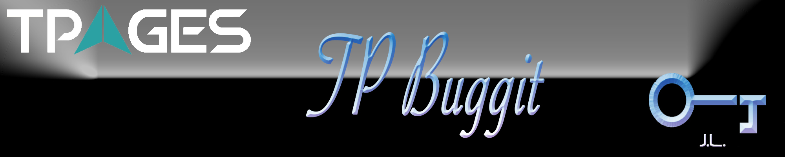

TPages Buggit#

Table of Contents#
Introduction#
As far as I know, there are mainly three ways to integrate subversion with Bugzilla: Scmbug, Sending email, and Buggit (DIY extension).
Scmbug#
Scmbug is a system that integrates software configuration management with bug-tracking. It is implemented in Perl and has been successfully deployed on UNIX-like and Windows systems. It has the following architecture.
Fig.1 Scmbug Architecture
Email#
This kind of plugins use Bugzilla email in feature (2.23.3+) as a parser to parse the commit message, so the message can contain anything that the email interface supports. Such extensions include svn_bz_email_in, svn_bz, svn_bugzilla_notify_script
Buggit#
Buggit is the DIY extension we developed by ourselves to integrate SVN with Bugzilla. It serves as a plugin in bugzilla which means that it has loose coupling with either Bugazilla or SVN. Our extension is tested on Bugzlla 4.4.6 and VisualSVN Server 2.7.3. We will give more details in the next few chapters.
Architecture#
Fig.2 Buggit Architecture
Seen from the figure above, we use a built-in hook in visual svn, post-commited.bat to call a hook.pl perl script, which then calls update, cvs_commit, and cvs_commit_file web services of Bugzilla on 123go website. The update service is the official web service of Bugzilla, and the other two are written in Buggit Extension, which you can check in Webservice.pm file of Buggit lib directory. The functionalities of each web service are marked red.
File Tree#
Fig.3 Buggit Fle Tree
- Config.pm: Basic configurations, including required and optional perl modules clarification needed to run this extension.
- Extension.pm: Main file, which uses integrating the extension to Bugzilla platform by using Bugzilla hooks.
- Lib: Perl modules are will be called by the subroutines of Extension.pm file.
- Template: Static template files.
- Web: Some pictures and css files.
DB Changes#
The following table contains the db changes compared with the original Bugzilla Database.
| Table | Field | Remarks | |--------------|----------------------------|------------------| | cvs_table | id | Auto_increment| | |bug_id | Foreign key bugs.bugs.bug_id | | |revision | Revision details of the bug | | |creator | User id of author | | | commit_time | Commit time of SVN current revision | | | author | Author who commits the revision | | | message | SVN Submit message | | | project | Subdirectories of repositories | | | repo | Repositories, in url format | | | type | Field reserved | | | uuid | Uuid of current repositories | | | vci | Field reserved | | cvs_commit_file | id | Auto_increment | | | commit_id | Foreignkey bugs.cvs_commit.id | | | name | File name changed in this revision | | | added | Lines added of the file | | | removed | Lines removed of the file | | bugs | cf_revision | Revision numbers of this bug |Tab.1 Buggit DB Changes
Usages#
It is quite easy to install the Buggit extension.
First, you should add a custom field to Bugzilla. Click the “Administration”->”Custom Fields”->”Add a new custom field”. The Name of the field must be “cf_revision”, and you may fill the Description part any content as you like.
Second, unzip the Buggit.zip to ./bugzilla/extension directory. Execute the checksetup.pl in the Bugzilla directory to install the extension. In the Buggit.zip there are two batch files and a perl script. You should put the batch files (pre-commit.bat and post-commit.bat) to the repository hook directory that you may want to integrate with Bugzilla. As to the perl script(hook.pl), please move it to the home directory of Cygwin user(/home/Administrator/).
If you want to disable this extension, create a file named “disabled” in Buggit directory and delete the post-commit.bat and pre-commit.bat hook files in subversion repositories.
Reference#
- https://code.google.com/p/bugzilla-vcs/
- https://www.bugzilla.org/docs/tip/en/html/api/
- http://www.bugzilla.org/docs/tip/en/html/api/Bugzilla/Hook.html